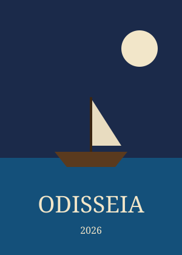

O filme

Odisseia é um filme de 2026 do diretor Christopher Nolan. O Matt Damon faz o papel de Odisseu.
O filme foi gravado com câmeras IMAX.
Elenco
O filme tem vários atores famosos, alguns deles são:
- Matt Damon
- Tom Holland
- Anne Hathaway
- Zendaya
A história
O filme é baseado no poema Odisseia, de Homero. Ele conta a viagem de Odisseu tentando voltar para casa, na ilha de Ítaca, depois da Guerra de Troia.
Algumas partes da viagem:
- A caverna do ciclope Polifemo
- A ilha da feiticeira Circe
- O canto das sereias
- A volta para Ítaca
Mais sobre o poema: Wikipédia